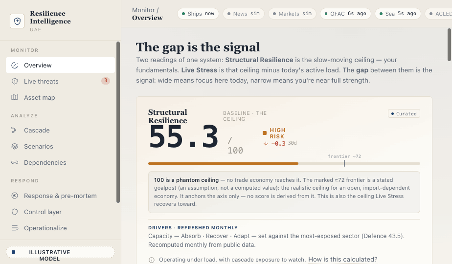

Build · stuff I built with AI
I build tools that make complex systems feel legible.
Working with AI, I turn messy, high-stakes problems into things you can see, question, and steer. Less dashboard, more instrument.
Featured
01 / 01
resilience-intelligence-system

Enter the platform →
In the workshop
more coming
Learning
tools for thinking & spaced practice
in progress
Mathematics
visual explainers, built to be played with
in progress
Experiments
small AI-built things, documented as I go
soon